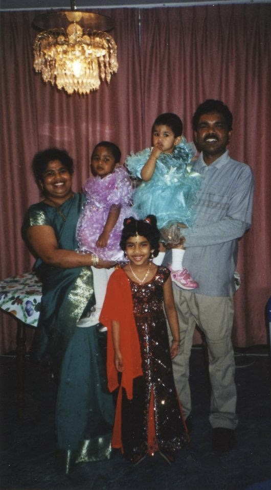
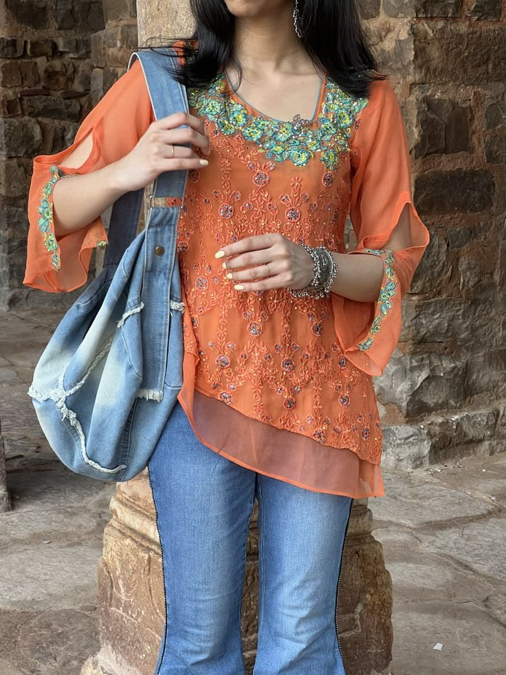
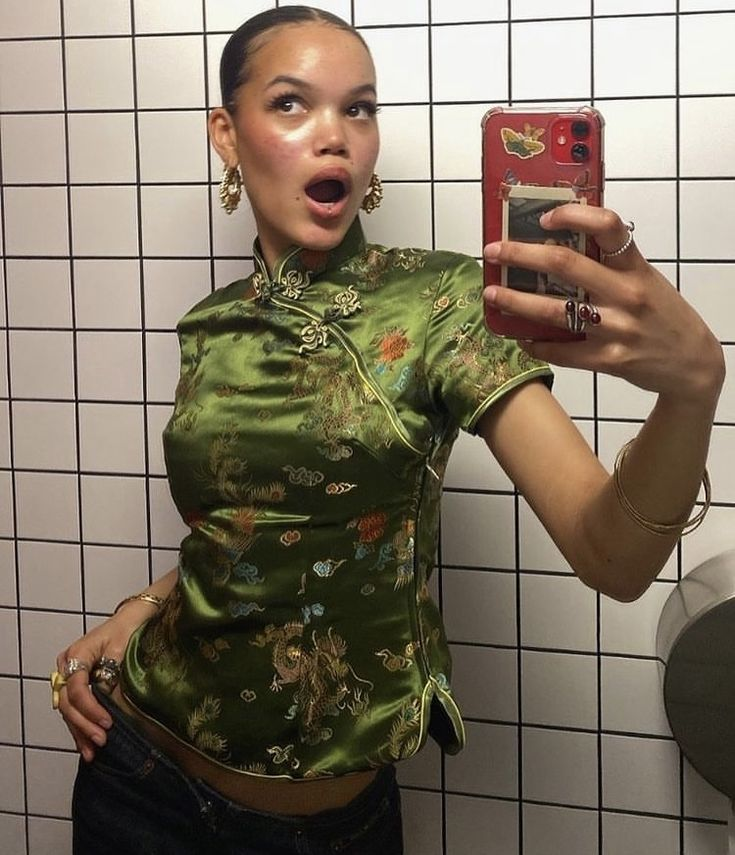
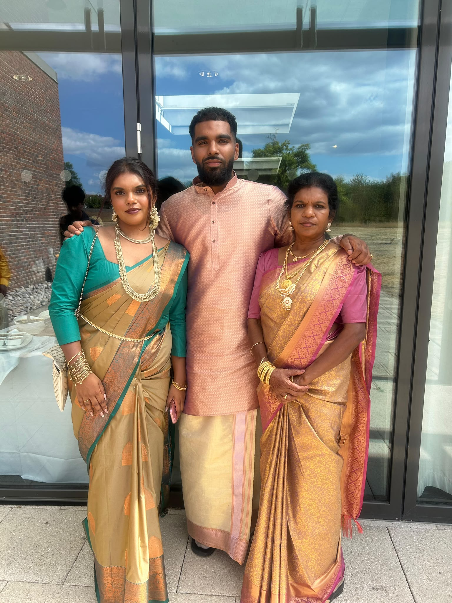
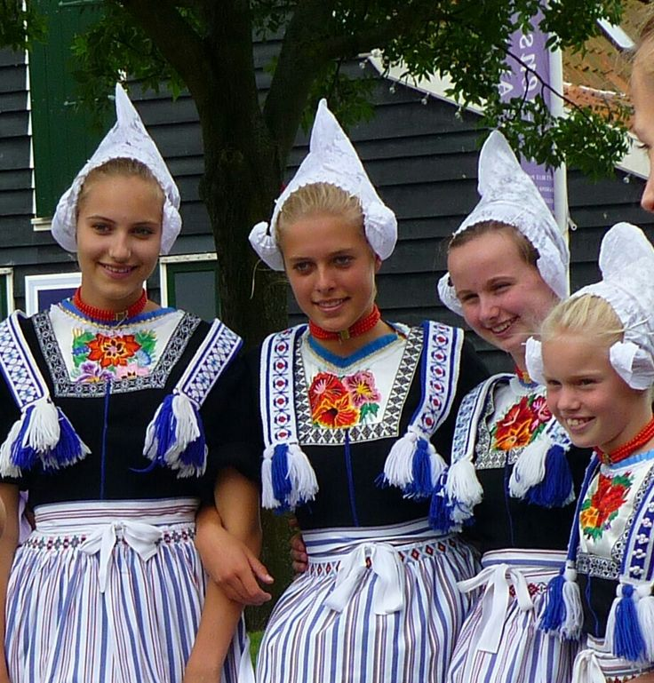
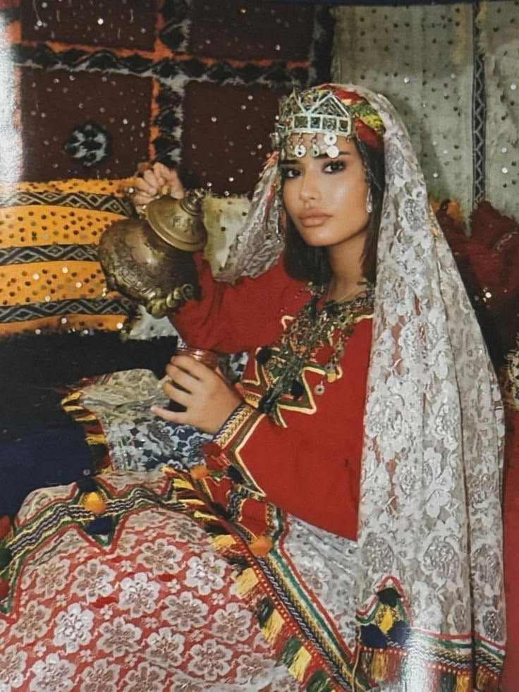
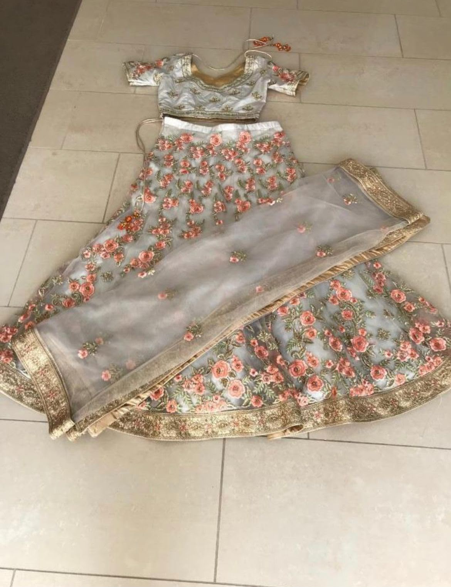

class: center, middle <!-- In deze textarea kan je in Markdown de slides aanpassen, zie https://github.com/gnab/remark/wiki voor alle mogelijkheden! --> # Kleding & Cultuur ### Hoe de kleding die wij dragen ons kan verbinden met cultuur --- # Inhoudsopgave 1. Mijn onderwerp 2. Waarom dit onderwerp? 3. Wat wil ik onderzoeken 4. 10 links voor inspiratie 5. Mijn 50 afbeeldingen 6. Patronen in mijn afbeeldingen 7. Traditioneel ↔ modern 8. Kleding en verbondenheid met cultuur 9. Wanneer cultuur een trend wordt 10. Wat wil ik anderen vertellen 11. Hoe wil ik mijn garden maken? 12. Mijn eerste content in mijn garden --- # Mijn onderwerp Ik ben geïnteresseerd in de relatie tussen **kleding en cultuur** Kleding kan aantonen: - waar je vandaan komt - bij welke cultuur of gemeenschap jij je verbonden voelt - hoe tradities veranderen - hoe culturele kleding terugkomt in moderne modetrends <p></p> --- # Waarom dit onderwerp? - Kleding = meer dan mode - Cultuur & identiteit - Gevoel van verbondenheid - Traditie naar moderne mode <p></p> <p></p> <p></p> --- # Wat wil ik onderzoeken? ## Hoe versterken kleding en cultuur elkaar? - Hoe sterk is de verbinding tussen kleding en afkomst? - Waarom nemen we kledingtrends uit andere landen/culturen over? - Cultural appreciation & culteral appropriation - Overeenkomsten & verschillen - Mijn eigen cultuur <p></p> <img src="../../assets/surinaamse koto.JPG" width="170" style="position: absolute; top: 390px; left: 280px;"> <p></p> <p></p> --- # 10 links voor inspiratie ### Musea collecties [Rijksmuseum mode&kostuums](https://www.rijksmuseum.nl/nl/collectie/node/Mode-en-kostuums--9f7aee49edbb4a83842c19adc3fc650d) [V&A textiles](https://www.vam.ac.uk/collections/textiles?srsltid=AfmBOoooiIt4d_imRyBw7cBckMe6i9dpi61pFaZktvTMpMwncSjNr32U) [The Met China:Through the Looking Glass](https://www.metmuseum.org/exhibitions/listings/2015/china-through-the-looking-glass/exhibition-galleries) ### Mode & cultuur [Vogue South asian fashion goes global](https://www.vogue.co.uk/article/south-asian-fashion-goes-global) [LSE South Asian diaspora](https://researchonline.lse.ac.uk/id/eprint/124396/1/Dasgupta_consuming-and-retailing-fashion--published.pdf) [NDTV habit of borrowing](https://www.ndtv.com/lifestyle/high-fashions-habit-of-borrowing-from-india-isnt-new-pradas-kolhapuri-chappals-are-just-the-latest-8756931) ### Webdesign [caehdus](https://caehdus.neocities.org/) [emergenceprojects](https://emergenceprojects.com/) [landonorris](https://landonorris.com/) [rewildyourself](https://rewildyourself.com/) --- Waarom kies je specifiek voor deze verzameling? Zijn er patronen te ontdekken? Heeft alles een specifieke kleurstelling? Herken je een actie, een gevoel, een materiaal of een standpunt? Wat is kenmerkend voor deze verzameling? Welke dingen komen steeds terug? Hieronder een voorbeeld voor het opnemen van een afbeelding. Het is iets lastiger om met Remarkjs een heleboel afbeeldingen op één slide op te nemen, je hebt daar veel custom CSS voor nodig. Een handige workaround is om in een fotobewerkingsprogramma een aantal collages van de door jou gevonden afbeeldingen te maken en die op te nemen als afbeelding op de slide...  --- background-image: url(./placeholder.svg) ... of als [background image](https://github.com/gnab/remark/wiki/Markdown#background-image) voor een slide. --- # Introtekst Wat wil je een ander vertellen over je onderwerp Hoe denk je dit te vertellen met eigen content? en met overige content zoals (links, afbeeldingen, tekst) Schrijf een eerste stukje content als basis voor je garden (maximaal 180 tekens). <!-- Laat onderstaande staan anders breekt je presentatie -->